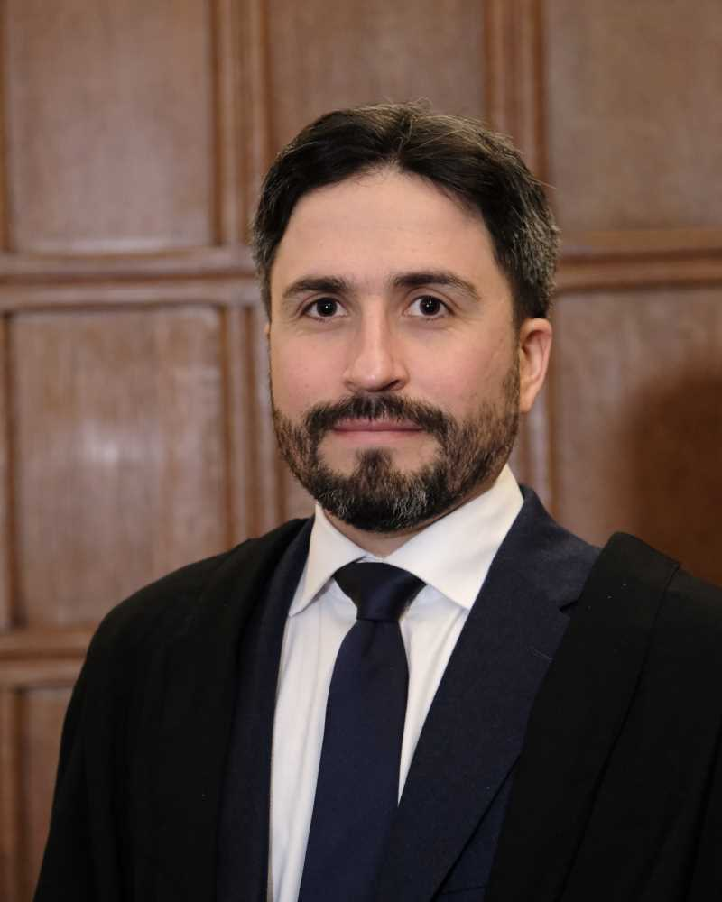

Boris Bolliet

Boris' research focuses mainly on the development of AI systems that can autonomously conduct scientific research. He is the creator of Cmbagent, the award-winning first multi-agent system applied to Cosmological data analysis. He is also one of the three creators of Denario, an end-to-end framework for the automated and modular production and execution of scientific research projects across multiple domains, from Physics to Neuroscience. Boris leads agentic AI research in the Infosys-Cambridge AI Centre.Current Positions
- Associate Teaching Professor in Data Intensive Science, MPhil in Data Intensive Science, Department of Physics, University of Cambridge (since 2026)
- Staff Fellow, Director of Studies and Trustee, Trinity Hall, Cambridge
- Principal Investigator, Cmbagent Lab, Department of Physics
- Agentic AI Research Lead, Infosys-Cambridge AI Centre
- Visiting Researcher, Cancer Research UK Cambridge Institute (since 2026)
- External Examiner, MSc in Data Science, Liverpool John Moores University (2024-2029)
Previous Positions
- Assistant Teaching Professor in Data Intensive Science (Cambridge, 2024-2026)
- Assistant Research Professor (DAMTP, Cambridge, 2022-2024)
- Guest Researcher (Flatiron Institute, CCA, New York, 2021-2023)
- Research Associate (Columbia University, PI: Colin Hill, 2020-2022)
- Research Associate (JBCA, Manchester, PI: Jens Chluba, 2017-2020)
- Fulbright Visiting Student Researcher (Louisiana State University, 2016)
- PhD (Grenoble, France, PI: Aurélien Barrau, 2013-2017)